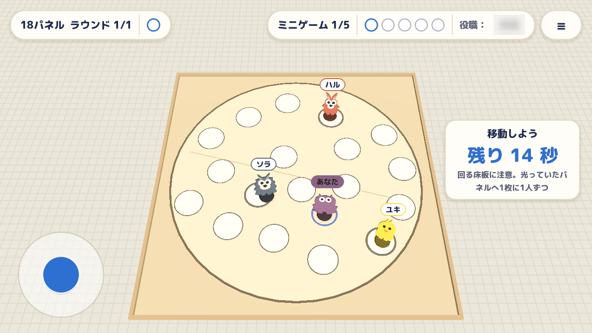
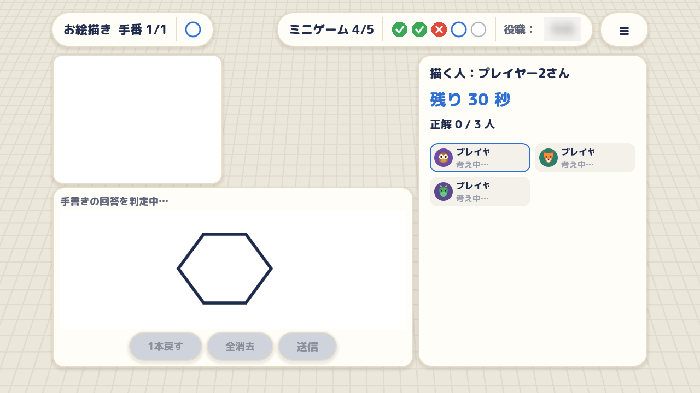
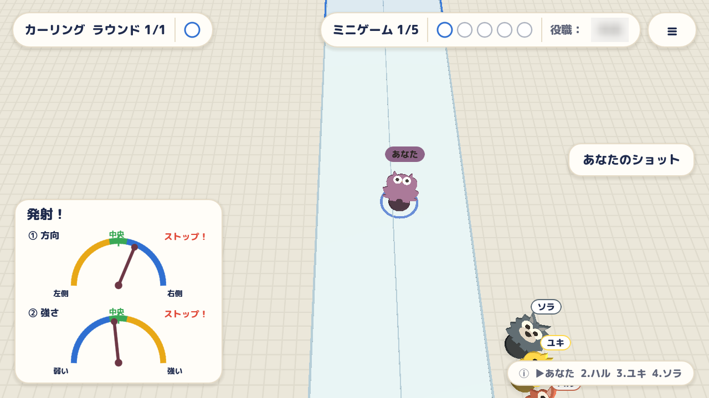
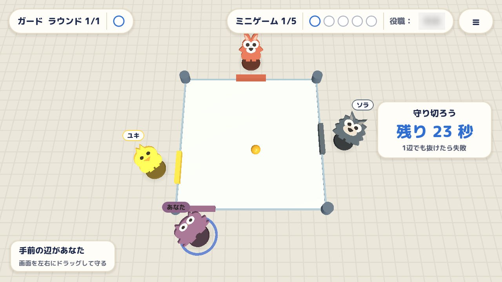
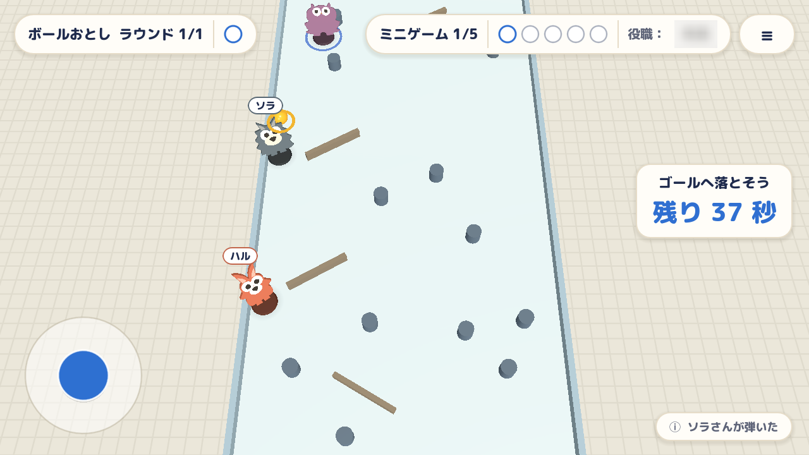
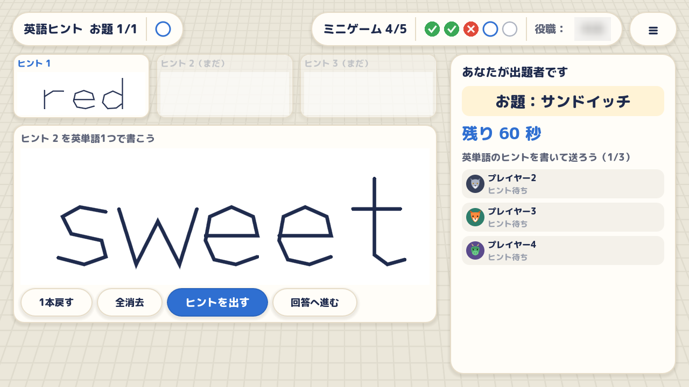
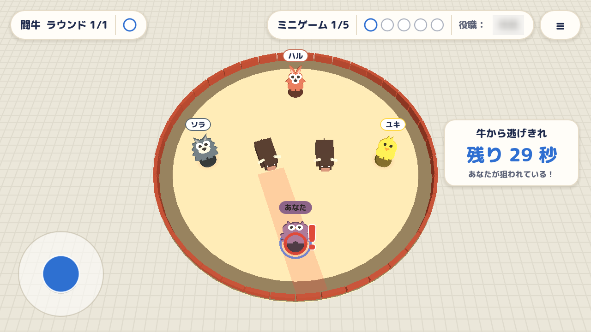
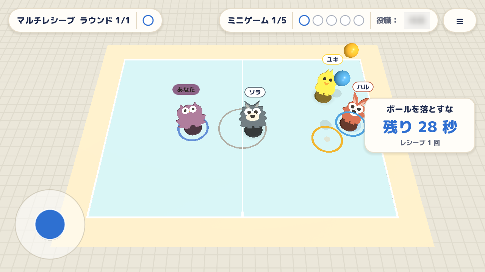

ルームに集まる
名前を決め、ルームを作るか、友達から受け取ったルームIDで参加します。
3〜8人のオンラインゲーム
SPYSは、仲間に紛れたスパイを探しながら、いろいろなミニゲームに挑むゲームです。友達と通話しながら、同じルームに集まって遊べます。
iPhone・Android向け。現在はテスト配布中です。

名前を決め、ルームを作るか、友達から受け取ったルームIDで参加します。
3〜8人のうち、ひとりがスパイ。協力して遊びながら、誰がスパイか考えます。
ミニゲームの結果に応じて、最後の投票でスパイを見つけるチャンスがあります。
遊べるミニゲームは8種類。力を合わせて挑むほど、ひとりだけ違う動きをするスパイが気になってくる。

光ったパネルを覚えて、仲間と伝え合おう。全員が別々の正解パネルに乗れたら成功。

ひとりが絵を描き、ほかのみんなは答えを手書き。全員に伝わる絵を描けるかな？

方向と強さを決めてコマを発射。ぶつかり合いながら、全員で目標の枠を目指そう。

ひとり一辺を担当。動くガードでボールを跳ね返し、みんなで最後まで守り切ろう。

転がるボールをコマで弾いて方向転換。坂の下にある当たりのゴールへ導こう。

英単語のヒントは最大3つ。出題者の手書きの言葉から、みんなで同じ答えを探そう。

狙いを定めて突進する2頭の牛。仲間とぶつからず、全員で逃げ切れるか？

落下地点に走ってボールをつなぐ。ひとつも落とさず、みんなでラリーを続けよう。
※掲載画像は開発中のゲーム画面です。内容や見た目は変更される場合があります。
SPYSはオンラインで遊ぶゲームです。参加にはインターネット接続と、同じルームに入る友達が必要です。現在のゲームは3人以上で始められます。
問題の報告やデータに関する問い合わせは、サポートページからご連絡ください。
サポートを見る